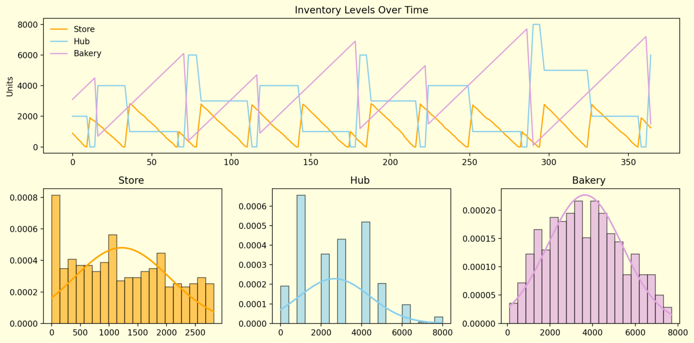

In today's complex and fast-moving supply chains, getting inventory right is a balancing act. Holding too much stock ties up capital and risks obsolescence. Holding too little? You risk losing sales and upsetting customers. Now imagine trying to get this balance right not just at one location, but across a network of warehouses, distribution centers, and stores. This is where Multi-Echelon Inventory Optimization (MEIO) comes into play.
In this blog, I’ll walk you through the key concepts behind MEIO using insights from a recent supply chain simulation I developed — covering everything from service levels, costs, and lead times to push-pull boundaries, shelf life, and inventory exchange curves.
Multi-echelon inventory optimization looks at the entire supply chain network — not just one point — to decide how much stock to keep, where, and when to replenish.
Instead of optimizing each node independently (e.g., just the store or just the central warehouse), MEIO considers the dependencies and trade-offs across echelons, leading to smarter, more efficient decisions.
In the simulation, we modeled multiple echelons like:
Central warehouse /Factory (Bakery)
Regional warehouse (Hub)
Local store (Retail)
Each level had its own lead time, replenishment frequency, and cost structure. The model’s goal? Find the right inventory policies at every level to minimize total cost while maintaining a desired service level.
Two key performance indicators were tracked:
Service level: % of cycles without stockouts
Fill rate: % of total demand fulfilled from available stock
Raising service level targets from 90% to 98% increased safety stock and holding cost, while reducing stockouts. But the gain in service came with diminishing returns — especially beyond the 95% mark.
Total cost combined:
Holding cost
Stockout penalties
Replenishment (ordering) cost
A U-shaped cost curve emerged:
Frequent orders reduce safety stock but raise replenishment costs
Infrequent orders do the opposite
The optimizer found the cost-optimal point based on real-time input parameters.
With stochastic lead times modeled, longer or more variable lead times required higher safety stock. A key realization was that lead time reduction directly reduces average inventory, making it a lever for optimization.
We introduced lead time sliders and constraints to let users explore its impact dynamically.
A central factor in the simulation — how often stock is replenished — controlled how lean or bloated inventory was.
Higher frequency led to:
Lower cycle stock
Higher order costs
Lower frequency led to:
More bulk shipments
Risk of stockouts without proper safety stock
An important decision-support tool in our simulation was the Inventory-Replenishment Exchange Curve — a plot of average inventory vs. number of replenishments.
This curve helps answer:
“How does increasing replenishment frequency reduce inventory — and when do diminishing returns set in?”
📈 What it showed:
As replenishment frequency increases, average inventory declines rapidly at first (due to lower cycle stock).
But after a point, additional frequency brings marginal gains.
This curve becomes a powerful visual guide for identifying near-optimal operations — without needing complex optimization.
In practical terms:
If reducing order quantity moves you left along the curve, you gain inventory efficiency but must weigh order cost impact.
If reducing lead time, you drop the whole curve downward — improving inventory performance across all frequencies.
✅ This visualization was especially useful when:
Planning push-pull boundaries
Segmenting SKUs by shelf life or variability
Deciding when to invest in faster lead times or smaller batches
We tested push-pull boundaries (e.g., for bakery items):
Pull-based (demand-driven) strategies worked best for short shelf-life products.
Push-based (forecast-driven) inventory suited stable items.
The optimizer automatically shifted the boundary based on cost and product attributes.
Short shelf-life products were optimized differently:
Lower inventory ceilings
Frequent, smaller replenishments
Prioritized freshness and speed
They were flagged in clustering outputs and visualized distinctly in cost-service plots.
We grouped products using PCA and K-means clustering:
By demand variability
By shelf life
By service sensitivity
Each cluster got a tailored replenishment and safety stock policy, making segmentation-based optimization easy and effective.
The simulation tracked and visualized:
Stockouts: unmet demand
Excess inventory: overstock beyond target
These KPIs helped validate that optimized parameters were not just mathematically optimal but operationally practical.
Our simulation engine:
Minimized total cost = holding + stockout + replenishment
Adjusted: safety stock, order frequency, reorder points, push-pull boundaries
Accounted for: lead time, shelf life, demand variability, service level
Used the exchange curve to visually assess cost-benefit tradeoffs
Multi-Echelon Inventory Optimization is not just for academics or enterprise ERPs. With the right modeling and simulation, it becomes:
A tactical tool for planners
A strategic lens for network designers
And a visual framework for everyone else
By simulating real-world conditions, adjusting parameters, and leveraging visuals like the inventory exchange curve, we get to a smarter, leaner, and more resilient supply chain.